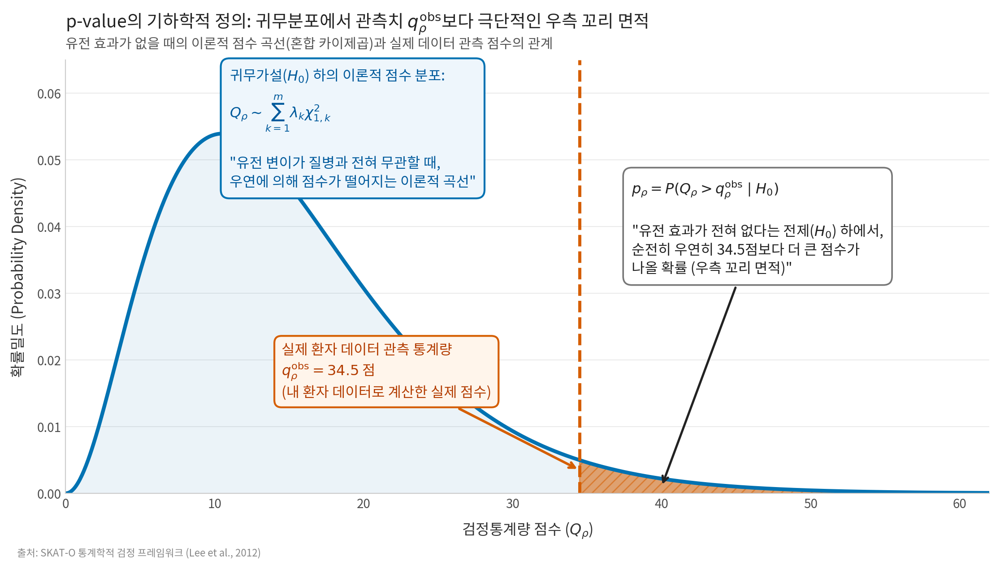

S <- c(3.0, 0.1, -0.1, 0.0)
m <- length(S) # 변이 개수: 4
print(S)[1] 3.0 0.1 -0.1 0.0LGC
November 18, 2026
질병 유무(\(y_i \in \{0, 1\}\))와 희귀 변이들 간의 관계를 모델링
\[\mathbf{H_0: \boldsymbol{\beta} = \mathbf{0} \quad (\beta_1 = \beta_2 = \dots = \beta_m = 0) \quad \text{vs} \quad H_1: \text{적어도 하나의 } \beta_j \ne 0}\]
\[\underset{(1 \times 1)}{\text{logit}(\pi_i)} = \underset{(1 \times 1)}{\alpha_0} + \underset{(1 \times p)}{\mathbf{X}_i^T} \, \underset{(p \times 1)}{\boldsymbol{\alpha}} + \underset{(1 \times m)}{\mathbf{G}_i^T} \, \underset{(m \times 1)}{\boldsymbol{\beta}} \quad (i = 1, \dots, n)\]
\[\mathbf{Q_{\text{GLM}} = \mathbf{S}^T \mathbf{V}_{\mathbf{S}}^{-1} \mathbf{S} \;\xrightarrow{d}\; \chi^2_m}\]
1 \(\pi_i \equiv P(y_i = 1 \mid \mathbf{X}_i, \mathbf{G}_i)\): \(i\)번째 환자의 질병 발병 확률 (\(1 \times 1\) 스칼라)
2 \(\alpha_0\): 희귀 변이를 보유하지 않고(\(\mathbf{G}_i = \mathbf{0}\)) 공변량도 기준 수준인(\(\mathbf{X}_i = \mathbf{0}\)) 기준 환자의 **기저 발병 오즈의 로그값(\(\log\frac{\pi_i}{1-\pi_i}\))
3 \(\mathbf{X}_i^T \boldsymbol{\alpha} = \sum_{k=1}^p \alpha_k X_{ik}\): 나이, 성별, 유전 주성분(PC) 등 \(p\)개 공변량의 고정 효과(Fixed Effect)
4 \(\mathbf{G}_i^T \boldsymbol{\beta} = \sum_{j=1}^m \beta_j g_{ij}\): 해당 유전자 내 \(m\)개 희귀 변이들의 유전 효과(Genetic Effect) (\(g_{ij} \in \{0, 1, 2\}\))
5 \(\mathbf{S} = [S_1, \dots, S_m]^T\): 각 변이의 단일 스코어를 모은 유전 효과 스코어 벡터
6 \(\mathbf{V}_{\mathbf{S}} = \text{Cov}(\mathbf{S} \mid H_0)\): 스코어들 간의 \(m \times m\) 분산-공분산 행렬.
7 공분산 역행렬(\(\mathbf{V}_{\mathbf{S}}^{-1}\))로 \(m\)차원 공간 전체를 강제 표준화(Sphering)하므로 자유도가 변이 개수와 동일한 \(\chi^2_m\)을 따름.
| 변이 | 자유도(df) | \(H_0\) 기각 임계치 |
|---|---|---|
| 1개 | 1 | 3.84 |
| 10개 | 10 | 18.31 |
| 50개 | 50 | 67.5 |
1 임계치 급증: 유전자 내 희귀 변이가 50개(\(m=50\))라면, \(\alpha=0.05\) 기준 기각 임계치가 단일 변이의 3.84에서 67.50으로 17.5배 폭증
2 실제 유전자 내 50개의 희귀변이 중 질병을 유발하는 변이는 2~3개 정도
3 즉, 실제 질병과 유전적인 연관성이 없는 대다수 변이들이 아무런 기여도 못하면서, 귀무가설 기각 임계치만 높여 버림
자유도 폭발 문제를 해결하기 위해 제시된 첫 번째 접근법
\[H_0: \beta_c = \mathbf{0} \quad \text{vs} \quad H_1: \beta_c \ne \mathbf{0}\]
\[\underset{(1 \times 1)}{\text{logit}(\pi_i)} = \underset{(1 \times 1)}{\alpha_0} + \underset{(1 \times p)}{\mathbf{X}_i^T} \, \underset{(p \times 1)}{\boldsymbol{\alpha}} + \underset{(1 \times 1)}{\beta_c} \left( \sum_{j=1}^m w_j g_{ij} \right) \quad (i = 1, \dots, n)\]
\[\mathbf{Q_B = \left( \sum_{j=1}^m w_j S_j \right)^2 = \left( \mathbf{1}^T \mathbf{W} \mathbf{S} \right)^2}\sim \chi_{1}^{m}\]
\[S_j = \sum_{i=1}^{m}g_{ij}(y- \hat{\pi}_{0,i})\]
1 \(C_i = \sum_{j=1}^m w_j g_{ij}\): \(i\)번째 환자의 단일 Burden 점수(Burden Score)
2 \(\beta_c\): 집계된 점수에 대한 단 하나의 공통 고정효과 계수.
3 이 경우 변이가 아무리 많아도 검정 모수가 \(\beta_c\) 1개 이므로 자유도가 무조거 1로 고정되어 자유도 폭발을 방어함.
1 비현실적 가정: 모든 변이의 효과 방향이 동일하다(\(\beta_c\))“는 가정을 전제
2 만약 질병을 유발하는 위해 변이(\(S_j > 0\))와 질병을 억제하는 보호 변이(\(S_k < 0\))가 섞여 있다면,
3 합산 과정에서 \((+)\)와 \((-)\)가 상쇄되어 \(Q_B \approx 0\)이 되며 신호가 완전히 소멸
1 Burden의 부호 상쇄 문제와 앞선 GLM의 자유도 폭발을 동시에 해결
\[\mathbf{H_0: \tau = 0 \quad \text{vs} \quad H_1: \tau > 0}\]
\[\beta_j \sim \text{i.i.d.} \left( 0, \; \tau w_j^2 \right) \quad \Longleftrightarrow \quad \boldsymbol{\beta} \sim \left( \mathbf{0}, \; \tau \mathbf{W}^2 \right)\]
\[\underset{(1 \times 1)}{\text{logit}(\pi_i)} = \underset{(1 \times 1)}{\alpha_0} + \underset{(1 \times p)}{\mathbf{X}_i^T} \, \underset{(p \times 1)}{\boldsymbol{\alpha}} + \underset{(1 \times m)}{\mathbf{G}_i^T} \, \underset{(m \times 1)}{\boldsymbol{\beta}} = \alpha_0 + \sum_{k=1}^p \alpha_k X_{ik} + \sum_{j=1}^m \beta_j g_{ij}\]
\[\mathbf{Q_S = (\mathbf{y} - \hat{\boldsymbol{\pi}}_0)^T \mathbf{K} (\mathbf{y} - \hat{\boldsymbol{\pi}}_0)} = \sum_{j=1}^m w_j^2 S_j^2 \sim \sum_{k=1}^{m} \lambda_{k}\chi^{2}_{1,k}\]
\[\divideontimes \,\,\mathbf{K} = \mathbf{GW}^2\mathbf{G}^T: n \times n \text{ 환자 간 유전적 유사도 커널 행렬}\]
유전자 내 대부분 변이가 원인 변이이고 모두 같은 방향으로 작용할 때는, 자유도로 신호를 강하게 모아주는 Burden 검정(\(Q_B\))보다 검정력이 떨어짐.
1 가설
\[H_0: \boldsymbol{\beta} = \mathbf{0} \quad \text {vs} \quad H_1: \text {not }H_0\]
\[\boldsymbol{\beta} = \mathbf{0} \quad (\beta_1 = \beta_2 = \dots = \beta_m = 0)\]
\[\boldsymbol{\beta} \sim \left( \mathbf{0}, \; \tau \mathbf{W} \mathbf{R}_\rho \mathbf{W} \right)\]
\[\mathbf{R}_\rho = \begin{pmatrix} 1 & \rho & \rho & \dots & \rho \\ \rho & 1 & \rho & \dots & \rho \\ \rho & \rho & 1 & \dots & \rho \\ \vdots & \vdots & \vdots & \ddots & \vdots \\ \rho & \rho & \rho & \dots & 1 \end{pmatrix}_{m \times m}\]
\[\mathbf{R}_\rho = (1 - \rho)\mathbf{I}_3 + \rho \mathbf{1}_3 \mathbf{1}_3^T = \begin{pmatrix} 1 & \rho & \rho \\ \rho & 1 & \rho \\ \rho & \rho & 1 \end{pmatrix}\]
2 모형
\[\text{logit}(\pi_i) = \alpha_0 + \mathbf{X}_i^T \boldsymbol{\alpha} + \mathbf{G}_i^T \boldsymbol{\beta}\]
3 검정통계량
\[\begin{align*} Q_\rho &= \rho Q_B + (1 - \rho) Q_S \quad (0 \le \rho \le 1) \\ \\ &= (\mathbf{y} - \hat{\boldsymbol{\pi}})^T \mathbf{K}_\rho (\mathbf{y} - \hat{\boldsymbol{\pi}})\end{align*}\]
\[\mathbf{K}_\rho = \mathbf{G}\mathbf{W}\mathbf{R}_\rho\mathbf{W}\mathbf{G}^T\]
가상의 유전자 데이터 설정 (변이 3개)가 있고, 1번 환자와 3번 환자의 CASE(\(K_{13}\))를 살펴본다고 하자.
1 1번 환자의 유전자형 행 벡터 (\(\mathbf{g}_1\))
\[\mathbf{g}_1 = \begin{pmatrix} 1 & 0 & 1 \end{pmatrix}\]
2 3번 환자의 유전자형 행 벡터 (\(\mathbf{g}_3\)):
\[\mathbf{g}_3 = \begin{pmatrix} 1 & 2 & 0 \end{pmatrix}\]
3 계산을 보기 쉽게 가중치는 모두 \(w_1 = w_2 = w_3 = 1\)로 설정
\[\mathbf{W} = \begin{pmatrix} 1 & 0 & 0 \\ 0 & 1 & 0 \\ 0 & 0 & 1 \end{pmatrix} = \mathbf{I}_3\]
4 변이 간 상관행렬 (\(\mathbf{R}_\rho\))
\[\mathbf{R}_\rho = (1 - \rho)\mathbf{I}_3 + \rho \mathbf{1}_3 \mathbf{1}_3^T = \begin{pmatrix} 1 & \rho & \rho \\ \rho & 1 & \rho \\ \rho & \rho & 1 \end{pmatrix}\]
5 행렬곱에서 스칼라 \(K_{13}\) 뽑아내기
\[\mathbf{K}_\rho = \mathbf{G}\mathbf{W}\mathbf{R}_\rho\mathbf{W}\mathbf{G}^T\]
\[K_{13} = \mathbf{g}_1 \cdot \mathbf{W} \cdot \mathbf{R}_\rho \cdot \mathbf{W} \cdot \mathbf{g}_3^T\]
6 \(\mathbf{R}_\rho = (1 - \rho)\mathbf{I} + \rho \mathbf{1}\mathbf{1}^T\)를 대입하여 두 덩어리로 쪼개자.
\[\begin{aligned} K_{13} &= \mathbf{g}_1 \Big( (1 - \rho)\mathbf{I} + \rho \mathbf{1}\mathbf{1}^T \Big) \mathbf{g}_3^T \\ &= (1 - \rho) \underbrace{(\mathbf{g}_1 \mathbf{g}_3^T)}_{\text{① SKAT 덩어리}} \;+\; \rho \underbrace{(\mathbf{g}_1 \mathbf{1})(\mathbf{1}^T \mathbf{g}_3^T)}_{\text{② Burden 덩어리}} \end{aligned}\]
① 앞쪽 덩어리: \(\mathbf{g}_1 \mathbf{g}_3^T\) (SKAT 성분: 동일 위치 변이의 내적)
\[ \mathbf{g}_1 \mathbf{g}_3^T = \begin{pmatrix} 1 & 0 & 1 \end{pmatrix} \begin{pmatrix} 1 \\ 2 \\ 0 \end{pmatrix} = (1 \times 1) + (0 \times 2) + (1 \times 0) = \mathbf{1} \]
② 뒤쪽 덩어리: \((\mathbf{g}_1 \mathbf{1})(\mathbf{1}^T \mathbf{g}_3^T)\) (Burden 성분: 총점끼리의 곱)
벡터 \(\mathbf{1}\)을 곱한다는 것은 벡터의 모든 원소를 다 더한다는 뜻
1번 환자의 변이 총합: \(\mathbf{g}_1 \mathbf{1} = 1 + 0 + 1 = \mathbf{2}\)
3번 환자의 변이 총합: \(\mathbf{1}^T \mathbf{g}_3^T = 1 + 2 + 0 = \mathbf{3}\)
두 총점을 곱하면,
\[ (\mathbf{g}_1 \mathbf{1})(\mathbf{1}^T \mathbf{g}_3^T) = 2 \times 3 = \mathbf{6} \]
7 최종 스칼라 결과: \(\rho\)에 따른 점수의 변화
\[ K_{13} = (1 - \rho) \times 1 \;+\; \rho \times 6 \]
\(\rho = 0.0\) (SKAT): \(K_{13} = \mathbf{1}\) (오직 두 환자가 일치하는 변이만 인정)
\(\rho = 1.0\) (Burden): \(K_{13} = \mathbf{6}\) (두 환자의 총 변이량의 곱으로 평가)
\(\rho = 0.2\) (SKAT-O): \(K_{13} = 0.8(1) + 0.2(6) = \mathbf{2.0}\)
8 그래서 \(K_{13}\)이 의미하는 바가 무엇이고, \(\rho\)가 무얼 의미하냐
\[Q_\rho = (\mathbf{y} - \hat{\boldsymbol{\pi}})^T \mathbf{K}_\rho (\mathbf{y} - \hat{\boldsymbol{\pi}})= \sum_{i=1}^n \sum_{j=1}^n r_i r_j K_{ij}\]
"1번과 3번 환자가 둘 다 질병에 걸렸을 때 (\(r_1 r_3 > 0\)), 두 사람의 유전적 유사도 점수(\(K_{13}\))도 실제로 높은가?"를 확인하여 질병과 유전자의 연관성을 입증하는 핵심 잣대가 된다.
\[K_{13} = (1 - \rho) \underbrace{\sum_{k=1}^m w_k^2 g_{1k} g_{3k}}_{\text{동일 위치 변이 일치 점수 (SKAT)}} \;+\; \rho \underbrace{\left( \sum_{k=1}^m w_k g_{1k} \right) \left( \sum_{l=1}^m w_l g_{3l} \right)}_{\text{총 돌연변이 부담량 곱 (Burden)}}\]
9 \(\rho\)는 유전적 유사도를 측정하는 잣대(SKAT vs Burden)를 데이터에 맞게 조절해 주는 핵심 매개변수이다.
정확히 같은 위치의 변이를 공유할 때만, 유전적으로 유사하다고 판정\[ \mathbf{g}_1 \mathbf{g}_3^T = \begin{pmatrix} 1 & 0 & 1 \end{pmatrix} \begin{pmatrix} 1 \\ 2 \\ 0 \end{pmatrix} = (1 \times 1) + (0 \times 2) + (1 \times 0) = \mathbf{1} \]
환자가 가진 변이의 '총개수(누적량) 가 비슷하게 많으면 유사하다고 판정\[ (\mathbf{g}_1 \mathbf{1})(\mathbf{1}^T \mathbf{g}_3^T) = 2 \times 3 = \mathbf{6} \]
1 우리가 구하려고 하는 것

2 But, 그런데 파란색 곡선(혼합 카이제곱분포)은 곡선의 방정식(PDF)이 종이 위에 단 하나의 깔끔한 수식으로 떨어지지 않는 난제가 존재함.
\[Q_\rho \sim \lambda_1 \chi^2_{1, 1} + \lambda_2 \chi^2_{1, 2} + \dots + \lambda_m \chi^2_{1, m}\]
…we approximate each marginal distribution of \(Q_{\rho_v}\) by modifying the moment-matching method of Liu and others (2009). In particular, instead of matching the first 3 moments, we match the mean, variance and kurtosis to improve the approximation in the tail area.”
6 그런데 다행히 통계량 \(Q_\rho\)의 ’평균, 분산, 그리고 꼬리 두께(첨도)’는 행렬 연산으로 단 0.001초 만에 뽑아낼 수 있고,
7 평균, 분산, 첨도 3개를 똑같이 맞춰 근사하자는 것이 Moment 매칭 근사에 출발이다.
3 모멘트 매칭을 통한 카이제곱 확률 치환
\[\mathbf{p_\rho = 1 - F\left( \frac{q_\rho^{\text{obs}} - \mu_Q}{\sqrt{v_Q}} \sqrt{2 \cdot df} + df \;\middle|\; \chi^2_{df} \right)}\]
\[\mathbf{\underbrace{p_\rho = 1 - F}_{\text{(A) 우측 꼬리 면적 (p-value)}}\left( \underbrace{\frac{q_\rho^{\text{obs}} - \mu_Q}{\sqrt{v_Q}}}_{\text{(B) 표준화 (Z-score)}} \underbrace{\sqrt{2 \cdot df} + df}_{\text{(C) 카이제곱 눈금자 변환}} \;\middle|\; \underbrace{\chi^2_{df}}_{\text{(D) 목표 분포}} \right)}\]
1 복잡한 혼합 카이제곱분포인 \(Q_\rho\)를 단일 카이제곱 확률변수 \(X \sim \chi^2_{df}\)의 1차 선형 변환으로 근사하자고 놓는다.
혼합 카이제곱분포 \(Q_\rho\)와 단일 카이제곱분포 \(X\)는 둘다, 오른쪽 긴 꼬리를 갖는 비대칭 분포라는 공통적인 특성을 공유하므로,
단일 카이제곱분포 \(X\)에 3개의 손잡이(자유도 \(df\), 척도 계수 \(a\), 위치 이동 상수 \(c\))를 부여하여,
\(Q_\rho\)의 모멘트를 완벽하게 모사하는 1차 선형 변환 모형을 제안
\[Q_\rho \approx a X + c \quad (단, \; X \sim \chi^2_{df})\]
2 여기서 카이제곱분포 \(X \sim \chi^2_{df}\)의 고유한 이론적 성질
\(E[X] = df\)
\(E[aX + c] = a \cdot E[X] + c = \mathbf{a \cdot df + c}\)
\(\operatorname{Var}(X) = 2 \cdot df \implies \text{표준편차: } \sqrt{2 \cdot df}\)
\(\operatorname{Var}(aX + c) = a^2 \cdot \operatorname{Var}(X) = \mathbf{a^2 (2 \cdot df)}\)
1 첨도(Kurtosis) 매칭 \(\rightarrow df\) 결정
\[\gamma = \frac{\mu_4}{\sigma^4} - 3 = \frac{E[(X - \mu)^4]}{\{\operatorname{Var}(X)\}^2} - 3\]
\[\sigma^2 = \operatorname{Var}(X) = 2 \cdot df \implies \sigma^4 = 4 \cdot df^2\]
\[\mu_4 = E[(X - df)^4] = 12 \cdot df + 3(2 \cdot df)^2 = \mathbf{12 \cdot df + 12 \cdot df^2}\]
\[\gamma_{\chi^2_{df}} = \frac{12 \cdot df + 12 \cdot df^2}{4 \cdot df^2} - 3 = \left( \frac{12 \cdot df}{4 \cdot df^2} + \frac{12 \cdot df^2}{4 \cdot df^2} \right) - 3\] \[= \left( \frac{3}{df} + 3 \right) - 3 = \mathbf{\frac{12}{df}}\]
\[\divideontimes \,\, df = \frac{12}{\hat{\gamma}}\]
2 분산 매칭 \(\to a\) 결정
\[a^2 (2 \cdot df) = v_Q \implies \mathbf{a = \frac{\sqrt{v_Q}}{\sqrt{2 \cdot df}}}\]
3 평균 매칭 \(\rightarrow c\) 결정
\[a \cdot df + c = \mu_Q \implies \mathbf{c = \mu_Q - a \cdot df}\]
1 구하고자 하는 \(p\)-value의 본래 정의는 통계량이 관측값보다 클 상위 꼬리 확률
\[p_\rho = P(Q_\rho > q_\rho^{\text{obs}}) \approx P(aX + c > q_\rho^{\text{obs}})\]
2 부등식 좌변에 순수 카이제곱 확률만 남도록 이항
\[P\left( X > \frac{q_\rho^{\text{obs}} - c}{a} \right)\]
3 우변에 유도된 \(c = \mu_Q - a \cdot df\)와 \(a = \frac{\sqrt{v_Q}}{\sqrt{2 \cdot df}}\)를 대입하여 정리
\[P\left( X > \frac{q_\rho^{\text{obs}} - c}{a} = \mathbf{\left( \frac{q_\rho^{\text{obs}} - \mu_Q}{\sqrt{v_Q}} \right) \sqrt{2 \cdot df} + df} \right) \]
4 p-value 도출
\[ \begin{aligned} p_\rho &= P_{H_0}\left( Q_\rho > q_\rho^{\text{obs}} \right) && \text{\small [(A) 원래 구하려는 정의]} \\[10pt] &\approx P\left( \chi^2_{df} > \frac{q_\rho^{\text{obs}} - \mu_Q}{\sqrt{v_Q}} \sqrt{2 \cdot df} + df \right) && \text{\small [(B)+(C)+(D) 카이제곱 확률로 치환]} \\[10pt] &= 1 - F\left( \frac{q_\rho^{\text{obs}} - \mu_Q}{\sqrt{v_Q}} \sqrt{2 \cdot df} + df \;\middle|\; \chi^2_{df} \right) && \text{\small [R의 pchisq로 계산하는 형태]} \end{aligned} \]
\[\mu_{Q} = \sum_{i=1}^{m}\lambda_i, \quad v_{Q} = 2\sum_{i=1}^{m} \lambda^{2}_i, \quad \divideontimes \,\, df = \frac{12}{\hat{\gamma}}\]
하나의 유전자 내에 총 4개의 변이(\(\mathbf{m=4}\))가 존재하고, 유전자형 가중치 행렬이 단위행렬(\(\mathbf{W} = \mathbf{I}\))인 상황을 가정
Score 벡터 \(\mathbf{S} = [S_1, S_2, S_3, S_4]^T\)
\(S_1 = 3.0\): 질병과 강하게 연관된 소수의 위해 변이
\(S_2 = 0.1, \; S_3 = -0.1, \; S_4 = 0.0\): 효과가 없는 다수의 중립 변이
\(Q_\rho = \rho Q_B + (1 - \rho) Q_S\)
단, 변이 간 독립 및 분산이 1인 이상적 환경(\(\operatorname{Cov}(\mathbf{S})=\mathbf{I}\)) 가정
\[\mathbf{R}_\rho = \begin{pmatrix} 1 & \rho & \rho & \dots & \rho \\ \rho & 1 & \rho & \dots & \rho \\ \rho & \rho & 1 & \dots & \rho \\ \vdots & \vdots & \vdots & \ddots & \vdots \\ \rho & \rho & \rho & \dots & 1 \end{pmatrix}_{m \times m}\]
\[\mu_Q = E[Q] = \sum_{j=1}^m \lambda_j E[\chi^2_{1, j}] = \sum_{j=1}^m \lambda_j \cdot 1 = \mathbf{\sum_{j=1}^m \lambda_j}\]
\[v_Q = \operatorname{Var}(Q) = \sum_{j=1}^m \lambda_j^2 \operatorname{Var}(\chi^2_{1, j}) = \sum_{j=1}^m \lambda_j^2 \cdot 2 = \mathbf{2 \sum_{j=1}^m \lambda_j^2}\]
\[\mathbf{df = \frac{\left(\sum \lambda_j^2\right)^2}{\sum \lambda_j^4}}\]
\[P\left( X > \frac{q_\rho^{\text{obs}} - c}{a} = \mathbf{\left( \frac{q_\rho^{\text{obs}} - \mu_Q}{\sqrt{v_Q}} \right) \sqrt{2 \cdot df} + df} \right) \]
\[ \begin{aligned} p_\rho &= P_{H_0}\left( Q_\rho > q_\rho^{\text{obs}} \right) && \text{\small [(A) 원래 구하려는 정의]} \\[10pt] &\approx P\left( \chi^2_{df} > \frac{q_\rho^{\text{obs}} - \mu_Q}{\sqrt{v_Q}} \sqrt{2 \cdot df} + df \right) && \text{\small [(B)+(C)+(D) 카이제곱 확률로 치환]} \\[10pt] &= 1 - F\left( \frac{q_\rho^{\text{obs}} - \mu_Q}{\sqrt{v_Q}} \sqrt{2 \cdot df} + df \;\middle|\; \chi^2_{df} \right) && \text{\small [R의 pchisq로 계산하는 형태]} \end{aligned} \]
# ==============================================================================
# SKAT-O Grid Search 알고리즘 직접 구현
# ==============================================================================
# [1단계] 관측된 변이 Score 벡터 설정 (앞선 시나리오 C: 4개 변이)
# S1 = 3.0 (원인 변이), S2 = 0.1, S3 = -0.1, S4 = 0.0 (잡음 변이)
S <- c(3.0, 0.1, -0.1, 0.0)
m <- length(S) # 변이 개수: 4
# SKAT 통계량(제곱합)과 Burden 통계량(합의 제곱) 계산
Q_S <- sum(S^2) # 9.02
Q_B <- (sum(S))^2 # 9.00
# [2단계] rho 탐색 그리드 설정 (0부터 1까지 0.1 간격, 총 11개 포인트)
# 논문(AJHG p.4)에서 권장하는 표준 그리드 탐색 구간
rho_grid <- seq(0, 1, by = 0.1)
# 결과를 저장할 데이터프레임 생성
results <- data.frame(
rho = rho_grid,
q_obs = NA,
mu_Q = NA,
v_Q = NA,
df = NA,
c_star = NA,
p_rho = NA
)
# [3단계] 11개 rho 그리드를 돌면서 Equation (11)로 p_rho 계산하는 루프
for (i in seq_along(rho_grid)) {
rho <- rho_grid[i]
# (1) 해당 rho에서의 관측 통계량 계산: Q_rho = (1 - rho)*Q_S + rho*Q_B
q_obs <- (1 - rho) * Q_S + rho * Q_B
# (2) m x m 등상관 커널 행렬 생성 및 R의 eigen()으로 고윳값 추출
R_rho <- matrix(rho, nrow = m, ncol = m)
diag(R_rho) <- 1
lambda <- eigen(R_rho)$values
# (3) 고윳값 기반 모멘트(평균, 분산) 및 꼬리 보정 유효 자유도(df) 도출
mu_Q <- sum(lambda)
v_Q <- 2 * sum(lambda^2)
df <- (sum(lambda^2))^2 / sum(lambda^4)
# (4) Equation (11) 카이제곱 눈금자 변환점(c_star) 계산
c_star <- ((q_obs - mu_Q) / sqrt(v_Q)) * sqrt(2 * df) + df
# (5) R 내장함수 pchisq로 상위 꼬리 유의확률 계산
p_rho <- 1 - pchisq(c_star, df = df)
# 결과 저장
results[i, "q_obs"] <- round(q_obs, 2)
results[i, "mu_Q"] <- round(mu_Q, 1)
results[i, "v_Q"] <- round(v_Q, 2)
results[i, "df"] <- round(df, 2)
results[i, "c_star"] <- round(c_star, 3)
results[i, "p_rho"] <- round(p_rho, 5)
}
# [4단계] Grid Search 결과 테이블 출력
print(results)
# [5단계] 최소 p-value 및 최적의 rho 선택 (Lee et al., Eq 9)
min_idx <- which.min(results$p_rho)
optimal_rho <- results$rho[min_idx]
min_p_val <- results$p_rho[min_idx]
cat("\n==========================================\n")
cat("Grid Search 최적 탐색 결과:\n")
cat(sprintf("선택된 최적 rho : %.1f\n", optimal_rho))
cat(sprintf("최소 p-value (T) : %.5f\n", min_p_val))
cat("==========================================\n") rho q_obs mu_Q v_Q df c_star p_rho
1 0.0 9.02 4 8.00 4.00 9.020 0.06060
2 0.1 9.02 4 8.24 3.52 8.156 0.06296
3 0.2 9.02 4 8.96 2.58 6.385 0.06883
4 0.3 9.01 4 10.16 1.88 4.924 0.07613
5 0.4 9.01 4 11.84 1.47 3.971 0.08386
6 0.5 9.01 4 14.00 1.25 3.364 0.09186
7 0.6 9.01 4 16.64 1.12 2.966 0.10010
8 0.7 9.01 4 19.76 1.06 2.694 0.10850
9 0.8 9.00 4 23.36 1.02 2.500 0.11697
10 0.9 9.00 4 27.44 1.00 2.358 0.12537
11 1.0 9.00 4 32.00 1.00 2.250 0.13361
==========================================
Grid Search 최적 탐색 결과:
선택된 최적 rho : 0.0
최소 p-value (T) : 0.06060
==========================================1 선형회귀 잔차 공분산 행렬
\[\text{Cov}(\mathbf{e}) = \underbrace{\mathbf{\sigma^2 \mathbf{I}}}_{\text{원래 분산}} \;-\; \underbrace{\mathbf{\sigma^2 \mathbf{I}}}_{\text{원래 분산}} \cdot \underbrace{\mathbf{X}(\mathbf{X}^T\mathbf{X})^{-1}\mathbf{X}^T}_{\text{설명변수가 설명한 투영 성분}}\]
2 위 공식의 \(\sigma^2 \mathbf{I}\) 자리에 \(\mathbf{V}\)를 그대로 바꿔 넣고, \(\mathbf{X}\) 자리에 공변량 \(\tilde{\mathbf{X}}\)를 넣어주면
\[ \mathbf{V} = \text{diag}\left( \hat{\mu}_{01}(1-\hat{\mu}_{01}), \; \dots, \; \hat{\mu}_{0n}(1-\hat{\mu}_{0n}) \right), \quad \tilde{\mathbf{X}} = [\mathbf{1}_n, \; \mathbf{X}] = \begin{bmatrix} 1 & X_{11} & X_{12} & \dots & X_{1c} \\ 1 & X_{21} & X_{22} & \dots & X_{2c} \\ \vdots & \vdots & \vdots & \ddots & \vdots \\ 1 & X_{n1} & X_{n2} & \dots & X_{nc} \end{bmatrix}_{n \times (c+1)} \]
\[\mathbf{P}_0 = \underbrace{\mathbf{V}}_{\text{원래 분산}} \;-\; \underbrace{\mathbf{V}\tilde{\mathbf{X}}(\tilde{\mathbf{X}}^T\mathbf{V}\tilde{\mathbf{X}})^{-1}\tilde{\mathbf{X}}^T\mathbf{V}}_{\text{공변량이 이미 설명해서 가져간 분산}}\]
3 \(\mathbf{P}_0\)는 쉽게 말해 ’공변량 효과를 털어낸 순수 잔차 벡터 \(\mathbf{r}\)의 공분산 행렬
공변량을 데이터로 피팅하여 빼주었기 때문에 잔차의 변동은 원래 분산 \(\mathbf{V}\)보다 줄어들게 되며
선형회귀에서 \(\sigma^2(\mathbf{I}-\mathbf{H})\)를 쓰듯이 원래 분산 \(\mathbf{V}\)에서 공변량이 설명해 버린 몫을 직교 차감한 것
바로 이 \(\mathbf{P}_0\)가 정확히 정의되어야만 잔차를 표준정규분포로 변환하여 \(Q\)의 혼합 카이제곱분포를 유도할 수 있음
\[\mathbf{r} \;\xrightarrow{d}\; N(\mathbf{0}, \; \mathbf{P}_0)\]
\[\left(\mathbf{P}_0 = \mathbf{V} - \mathbf{V}\tilde{\mathbf{X}}(\tilde{\mathbf{X}}^T\mathbf{V}\tilde{\mathbf{X}})^{-1}\tilde{\mathbf{X}}^T\mathbf{V}\right)\]
\[Q_S = (\mathbf{y} - \hat{\boldsymbol{\mu}}_0)^T \mathbf{K} (\mathbf{y} - \hat{\boldsymbol{\mu}}_0) = \mathbf{r}^T \mathbf{K} \mathbf{r}\]
1 \(\mathbf{r} = [r_1, \dots, r_n]^T \in \mathbb{R}^{n \times 1}\): 나이·성별 등 공변량 효과를 제거한 잔차 벡터
2 \(\mathbf{K} = \mathbf{G}\mathbf{W}\mathbf{W}\mathbf{G}^T \in \mathbb{R}^{n \times n}\): 환자 간 유전적 거리/유사도 커널 행렬
\[\mathbf{r} = \mathbf{P}_0^{1/2} \mathbf{z} \quad \left(z_i \overset{\text{i.i.d.}}{\sim} N(0, 1)\right)\]
1 공분산 일치 검증
\[\text{Cov}(\mathbf{P}_0^{1/2} \mathbf{z}) = \mathbf{P}_0^{1/2} \text{Cov}(\mathbf{z}) (\mathbf{P}_0^{1/2})^T = \mathbf{P}_0^{1/2} \mathbf{I}_n \mathbf{P}_0^{1/2} = \mathbf{P}_0\]
\[Q_S = \mathbf{r}^T \mathbf{K} \mathbf{r} = Q_S = (\mathbf{P}_0^{1/2} \mathbf{z})^T \mathbf{K} (\mathbf{P}_0^{1/2} \mathbf{z})\]
\[Q_S = \mathbf{z}^T \mathbf{P}_0^{1/2} \mathbf{K} \mathbf{P}_0^{1/2} \mathbf{z} = \mathbf{z}^T \left( \mathbf{P}_0^{1/2} \mathbf{K} \mathbf{P}_0^{1/2} \right) \mathbf{z}\]
\[Q_S = \mathbf{z}^T \mathbf{P}_0^{1/2} \mathbf{K} \mathbf{P}_0^{1/2} \mathbf{z} = \mathbf{z}^T \left( \mathbf{P}_0^{1/2} \mathbf{K} \mathbf{P}_0^{1/2} \right) \mathbf{z}\]
\[\mathbf{P}_0^{1/2} \mathbf{K} \mathbf{P}_0^{1/2} = \mathbf{U} \boldsymbol{\Lambda} \mathbf{U}^T\]
\[Q_S = \mathbf{z}^T (\mathbf{U} \boldsymbol{\Lambda} \mathbf{U}^T) \mathbf{z} = (\mathbf{U}^T \mathbf{z})^T \boldsymbol{\Lambda} (\mathbf{U}^T \mathbf{z})\]
1 \(\mathbf{z}^* = \mathbf{U}^T \mathbf{z} \in \mathbb{R}^{n \times 1}\)를 정의
평균: \(E[\mathbf{z}^*] = \mathbf{U}^T E[\mathbf{z}] = \mathbf{U}^T \mathbf{0} = \mathbf{0}\)
\(\text{Cov}(\mathbf{z}^*) = \mathbf{U}^T \text{Cov}(\mathbf{z}) \mathbf{U} = \mathbf{U}^T \mathbf{I}_n \mathbf{U} = \mathbf{U}^T \mathbf{U} = \mathbf{I}_n\)
\[\mathbf{z}^* \;\sim\; N(\mathbf{0}, \; \mathbf{I}_n) \quad \Longleftrightarrow \quad z_k^* \overset{\text{i.i.d.}}{\sim} N(0, 1)\]
2 \(Q_{S}\) 스칼라 합으로 표현
\[Q_S = (\mathbf{z}^*)^T \boldsymbol{\Lambda} \mathbf{z}^* = [z_1^*, \dots, z_n^*] \begin{bmatrix} \lambda_1 & & 0 \\ & \ddots & \\ 0 & & \lambda_n \end{bmatrix} \begin{bmatrix} z_1^* \\ \vdots \\ z_n^* \end{bmatrix} = \sum_{k=1}^n \lambda_k (z_k^*)^2\]
3 \(Q_{S}\)의 유효자유도
\[\nu = \frac{\left( \sum_{j=1}^m \lambda_j \right)^2}{\sum_{j=1}^m \lambda_j^2}\]
\[\mathbf{r} \sim N(0, \mathbf{P}_0= \text{Cov}(\mathbf{r})) \to \mathrm{z} = \mathbf{P}_0^{-1/2} \mathbf{r} \sim N(\mathbf{0}, \mathbf{I})\]
\[ \begin{aligned} Q_\rho &= \mathbf{r}^T \mathbf{K}_\rho \mathbf{r} \\ \\ &= \mathbf{r}^T \Big( \mathbf{I} \cdot \mathbf{K}_\rho \cdot \mathbf{I} \Big) \mathbf{r} \\ \\ &= \mathbf{r}^T \Big( \mathbf{P}_0^{-1/2} \mathbf{P}_0^{1/2} \cdot \mathbf{K}_\rho \cdot \mathbf{P}_0^{1/2} \mathbf{P}_0^{-1/2} \Big) \mathbf{r} \\ \\ &= \Big( \mathbf{r}^T \mathbf{P}_0^{-1/2} \Big) \Big( \mathbf{P}_0^{1/2} \mathbf{K}_\rho \mathbf{P}_0^{1/2} \Big) \Big( \mathbf{P}_0^{-1/2} \mathbf{r} \Big) \\ \\ &= (\mathbf{P}_0^{-1/2} \mathbf{r})^T \Big( \mathbf{P}_0^{1/2} \mathbf{K}_\rho \mathbf{P}_0^{1/2} \Big) (\mathbf{P}_0^{-1/2} \mathbf{r}) \\ \\ &= \mathbf{z}^T \mathbf{A}_\rho \mathbf{z} \quad \Big( \text{단, } \mathbf{z} = \mathbf{P}_0^{-1/2} \mathbf{r} \sim N(\mathbf{0}, \mathbf{I}), \;\; \mathbf{A}_\rho = \mathbf{P}_0^{1/2} \mathbf{K}_\rho \mathbf{P}_0^{1/2} \Big) \end{aligned} \]
\[ \mathbf{A}_\rho = \mathbf{P}_0^{1/2} \mathbf{K}_\rho \mathbf{P}_0^{1/2}\]
\[ \divideontimes \,\,Q_\rho = \mathbf{z}^T \mathbf{A}_\rho \mathbf{z} \quad \Big( \mathbf{z} \sim N(\mathbf{0}, \mathbf{I}) \Big) \]
1 스펙트럼 정리
우리가 관측한 통계량 \(Q_\rho = \mathbf{z}^T \mathbf{A}_\rho \mathbf{z}\)는 \(n\)명 환자의 잔차와 공변량, 유전형이 거대한 행렬곱으로 복잡하게 뒤엉켜 있음.
이 상태 그대로는 \(Q_\rho\)가 이론적으로 어떤 확률분포를 따르는지 수식으로 정의하는 것 자체가 불가능
\(\mathbf{A}_\rho = \mathbf{U} \boldsymbol{\Lambda} \mathbf{U}^T\)를 통해 얽힌 상관관계를 완전히 털어내면, 행렬곱이 사라지고 \(Q_\rho = \sum \lambda_k v_k^2\)이라는 단순한 ‘제곱합’ 으로바뀜.
스펙트럼 분해를 거치고 나면, 논문에 기술된 바와 같이 ’귀무가설 하에서 통계량 \(Q_\rho\)가 점근적으로 독립 카이제곱분포들의 가중 선형결합인 혼합 카이제곱분포를 따른다’는 점이 수학적으로 증명됨. (즉, 분포를 알게되어서 이제 수천만번의 순열 검정을 하지 않아도 됨.)
행렬 \(\mathbf{A}_\rho\)는 실수 대칭행렬이므로 스펙트럼 정리에 의해 고유벡터 직교행렬 \(\mathbf{U}\) (\(\mathbf{U}^T \mathbf{U} = \mathbf{I}\))와 고윳값 대각행렬 \(\boldsymbol{\Lambda} = \text{diag}(\lambda_1^{(\rho)}, \dots, \lambda_m^{(\rho)})\)로 쪼갤 수 있다.
\[\mathbf{A}_\rho = \mathbf{P}_0^{1/2} \mathbf{K}_\rho \mathbf{P}_0^{1/2}= \mathbf{U} \boldsymbol{\Lambda} \mathbf{U}^T\]
1 \(\mathbf{K}_\rho\), \(\mathbf{P}_0^{1/2}\) 셋팅
\[\mathbf{P}_0^{1/2} = \begin{pmatrix} 2 & 1 \\ 1 & 2 \end{pmatrix}, \quad \mathbf{K}_\rho = \begin{pmatrix} 2 & 1 \\ 1 & 2 \end{pmatrix}\]
\[\mathbf{A}_\rho = \mathbf{P}_0^{1/2} (\mathbf{K}_\rho \mathbf{P}_0^{1/2}) = \begin{pmatrix} 2 & 1 \\ 1 & 2 \end{pmatrix} \begin{pmatrix} 5 & 4 \\ 4 & 5 \end{pmatrix} = \begin{pmatrix} 2\cdot 5 + 1\cdot 4 & 2\cdot 4 + 1\cdot 5 \\ 1\cdot 5 + 2\cdot 4 & 1\cdot 4 + 2\cdot 5 \end{pmatrix}\]\[\mathbf{A}_\rho = \begin{pmatrix} 14 & 13 \\ 13 & 14 \end{pmatrix}\]
2 스펙트럼 분해 (\(\mathbf{A}_\rho = \mathbf{U} \boldsymbol{\Lambda} \mathbf{U}^T\))
\[\det(\mathbf{A}_\rho - \lambda \mathbf{I}) = \det \begin{pmatrix} 14 - \lambda & 13 \\ 13 & 14 - \lambda \end{pmatrix} = (14 - \lambda)^2 - 13^2 = 0\]
\[(14 - \lambda - 13)(14 - \lambda + 13) = (1 - \lambda)(27 - \lambda) = 0\]
\[\therefore \lambda_1 = \mathbf{27}, \quad \lambda_2 = \mathbf{1}\]
\[\begin{pmatrix} 14 - 27 & 13 \\ 13 & 14 - 27 \end{pmatrix} \begin{pmatrix} x \\ y \end{pmatrix} = \begin{pmatrix} -13 & 13 \\ 13 & -13 \end{pmatrix} \begin{pmatrix} x \\ y \end{pmatrix} = \begin{pmatrix} 0 \\ 0 \end{pmatrix}\]\[-13x + 13y = 0 \quad \Longrightarrow \quad x = y\]
\[\mathbf{u}_1 = \begin{pmatrix} 1 \\ 1 \end{pmatrix}\]
\[\begin{pmatrix} 13 & 13 \\ 13 & 13 \end{pmatrix} \begin{pmatrix} x \\ y \end{pmatrix} = \begin{pmatrix} 0 \\ 0 \end{pmatrix} \quad \Longrightarrow \quad x = -y\]
\[\mathbf{u}_2 = \begin{pmatrix} 1 \\ -1 \end{pmatrix}\]
3 고유벡터 정규화
\[\mathbf{u}_1 = \frac{1}{\mathbf{\sqrt{2}}} \begin{pmatrix} 1 \\ 1 \end{pmatrix} = \begin{pmatrix} \frac{1}{\sqrt{2}} \\ \frac{1}{\sqrt{2}} \end{pmatrix}, \quad \mathbf{u}_2 = \frac{1}{\mathbf{\sqrt{2}}} \begin{pmatrix} 1 \\ -1 \end{pmatrix} = \begin{pmatrix} \frac{1}{\sqrt{2}} \\ -\frac{1}{\sqrt{2}} \end{pmatrix}\]
\[\mathbf{U} = \begin{pmatrix} \mathbf{u}_1 & \mathbf{u}_2 \end{pmatrix} = \begin{pmatrix} \frac{1}{\sqrt{2}} & \frac{1}{\sqrt{2}} \\ \frac{1}{\sqrt{2}} & -\frac{1}{\sqrt{2}} \end{pmatrix}\]
4 최종 산출본
\[\mathbf{A}_\rho = \mathbf{A}_\rho = \mathbf{U} \boldsymbol{\Lambda} \mathbf{U}^T = \begin{pmatrix} 14 & 13 \\ 13 & 14 \end{pmatrix} = \underbrace{ \begin{pmatrix} \frac{1}{\sqrt{2}} & \frac{1}{\sqrt{2}} \\ \frac{1}{\sqrt{2}} & -\frac{1}{\sqrt{2}} \end{pmatrix} }_{\mathbf{U} \text{ (회전 행렬)}} \underbrace{ \begin{pmatrix} \mathbf{27} & 0 \\ 0 & \mathbf{1} \end{pmatrix} }_{\boldsymbol{\Lambda} \text{ (고윳값 대각행렬)}} \underbrace{ \begin{pmatrix} \frac{1}{\sqrt{2}} & \frac{1}{\sqrt{2}} \\ \frac{1}{\sqrt{2}} & -\frac{1}{\sqrt{2}} \end{pmatrix} }_{\mathbf{U}^T \text{ (전치 행렬)}} \]
1 \(Q_\rho = \mathbf{z}^T \mathbf{A}_\rho \mathbf{z},\,\, \boldsymbol{\Lambda} = \text{diag}(\lambda_1^{(\rho)}, \dots, \lambda_m^{(\rho)})\)
\[Q_\rho = (\mathbf{z}^T \mathbf{U}) \cdot \mathbf{\Lambda} \cdot (\mathbf{U}^T \mathbf{z})\]
\[Q_\rho = \mathbf{v}^T \mathbf{\Lambda} \mathbf{v}, \quad \mathbf{v} = \mathbf{U}^T \mathbf{z} = \begin{pmatrix} v_1 \\ v_2 \\ \vdots \\ v_n \end{pmatrix}\]
\[Q_\rho = \mathbf{v}^T \boldsymbol{\Lambda} \mathbf{v} = \begin{pmatrix} v_1 & v_2 & \dots & v_n \end{pmatrix} \begin{pmatrix} \lambda_1 & 0 & \dots & 0 \\ 0 & \lambda_2 & \dots & 0 \\ \vdots & \vdots & \ddots & \vdots \\ 0 & 0 & \dots & \lambda_n \end{pmatrix} \begin{pmatrix} v_1 \\ v_2 \\ \vdots \\ v_n \end{pmatrix} = \sum_{k=1}^n \lambda_k v_k^2\]
정의: 서로 독립인 자유도 1의 카이제곱 확률변수들 \(\chi^2_{1, 1}, \chi^2_{1, 2}, \dots, \chi^2_{1, m} \stackrel{i.i.d.}{\sim} \chi^2_1\)과, 0이 아닌 임의의 양의 실수 가중치 계수들 \(\lambda_1, \lambda_2, \dots, \lambda_m > 0\)이 주어졌을 때,
이들의 선형 결합(\(\sum \lambda_k \chi^2_1\))을 의미함.
\(v_k\)는 서로 독립인 표준정규변수인가? \(\to\) Yes. 직교 회전(\(U^T U = I\))으로 공분산이 단위행렬로 보존되므로 \(v_k \stackrel{i.i.d.}{\sim} N(0, 1)\)
\(v_k^2\)은 자유도 1의 카이제곱변수인가? \(\rightarrow\) Yes. 표준정규변수의 제곱은 정의상 정확히 \(\chi^2_1\)
그 앞에 붙은 계수가 상수인가? \(\rightarrow\) Yes. 대각화 과정에서 뽑아낸 불변의 실수 고윳값 \(\lambda_k\)들임.
따라서 \(Q_\rho = \sum_{k=1}^n \lambda_k v_k^2\)는 수학적으로 “자유도 1의 독립 카이제곱변수 \(v_k^2\)에 고윳값 가중치 \(\lambda_k\)가 곱해진 합”이 되므로, 정확히 혼합 카이제곱분포를 따른다.
\[Q_\rho \sim \lambda_1 \chi^2_{1, 1} + \lambda_2 \chi^2_{1, 2} + \dots + \lambda_m \chi^2_{1, m}\]